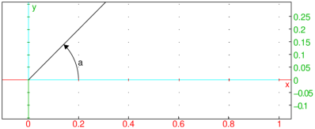
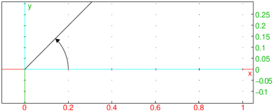

25.13.4 Measure of an angle in the plane
See Section 26.10.9 for angle measures in three-dimensional
geometry.
The angle
command finds the measure of an angle.
-
angle takes three mandatory arguments and one
optional argument:
-
A,B,C, three points.
- str, a string.
- angle(A,B,C ⟨,str ⟩)
returns the measure of angle ABC (in the units that Xcas
is configured for). With the argument str,
the angle will be drawn indicated by a small arc and labeled
with the string. If the angle is a right angle, the indicator will
be a corner rather than an arc.
Examples


The angle command has angleat and
angleatraw versions (see Section 25.13.1). For the
command line versions of these commands, the optional fourth argument
for angle is replaced by a mandatory fourth argument for the
point to put the measurement.
Converting between radians and degrees
You can use radians and
degrees commands to
convert from degrees to radians and vice versa, respectively.
These commands return inexact values.